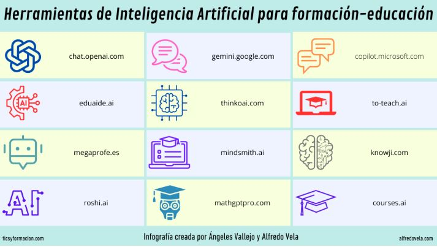
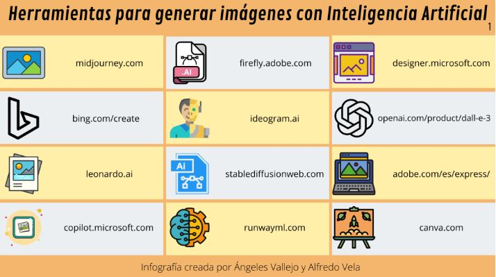
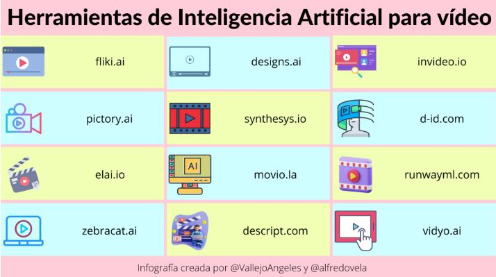

Explora cómo la inteligencia artificial está transformando la enseñanza
IA para generar textos
Herramientas como ChatGPT, Perplexiti, Gemini, Copilot están ayudando a los docentes y estudiantes a crear contenido escrito.

La importancia de la generación de texto y las herramientas de IA en el ámbito educativo radica en su potencial para transformar la forma en que enseñamos y aprendemos. Estas herramientas pueden:
Personalizar la educación: Al generar contenido adaptado a las necesidades y estilos de aprendizaje individuales de cada estudiante, se puede crear una experiencia de aprendizaje más efectiva y motivadora.
Plataformas como DALL·E, Midjourney, Leonardo, Canva, entre otros están permitiendo a los docentes y estudiantes explorar creatividad visual.

La generación de imágenes con inteligencia artificial (IA) en educación es una herramienta innovadora que utiliza algoritmos avanzados para crear imágenes a partir de descripciones textuales. Esta tecnología, en constante evolución, ofrece un amplio abanico de posibilidades para enriquecer el proceso de enseñanza y aprendizaje.
La importancia de la generación de imágenes y las herramientas de IA en el ámbito educativo radica en su capacidad para transformar la forma en que visualizamos y comprendemos el mundo. Estas herramientas permiten:
Fomentar la creatividad: Los estudiantes pueden utilizar estas herramientas para crear sus propias ilustraciones, diseños y animaciones, desarrollando así su pensamiento creativo y habilidades artísticas.
Herramientas como fliki, Invideo, runway, heygen, están ayudando a los estudiantes y docenttes a crear contenido en formato video.

La generación de videos con inteligencia artificial (IA) en educación es una tecnología emergente que permite crear videos de manera automatizada o semiautomatizada. Esto significa que se pueden generar videos a partir de textos, imágenes o incluso datos estructurados, lo que abre un abanico de posibilidades para la creación de contenidos educativos más dinámicos y personalizados.
La importancia de la generación de videos y las herramientas de IA en el ámbito educativo radica en su capacidad para transformar la forma en que los estudiantes aprenden.